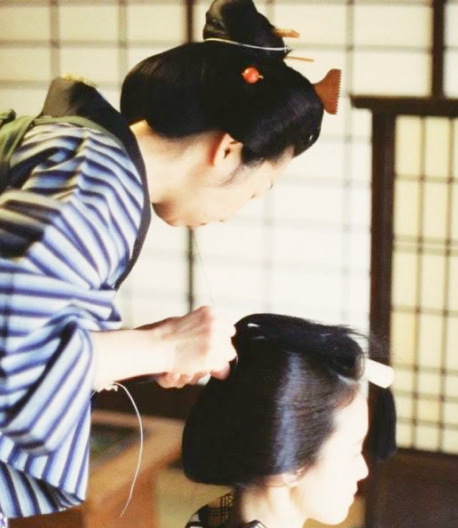

結髪師
菱田 聖子
Hishida Seiko

プロフィール：
京都祇園町の結髪師へ弟子入り。祇園町、宮川町、先斗町の舞妓さんをかかえる美容室で住み込み生活をしながらおよそ6年技術を磨く。
その後、ブライダルを軸とするホテルの一般ブライダル美容室へ入室。京都ならではの日本髪、主に地髪での結い上げを担当する。しかし、打掛に洋髪が昨今の流行であるため、物足りなさを感じ、日本髪をさらに追求すべく時代劇の道へ。
鬘業界の門戸をたたき、舞台、朝ドラ、映画の結髪師となる。
現在は仙台・京都を拠点にフリーとして活躍中。